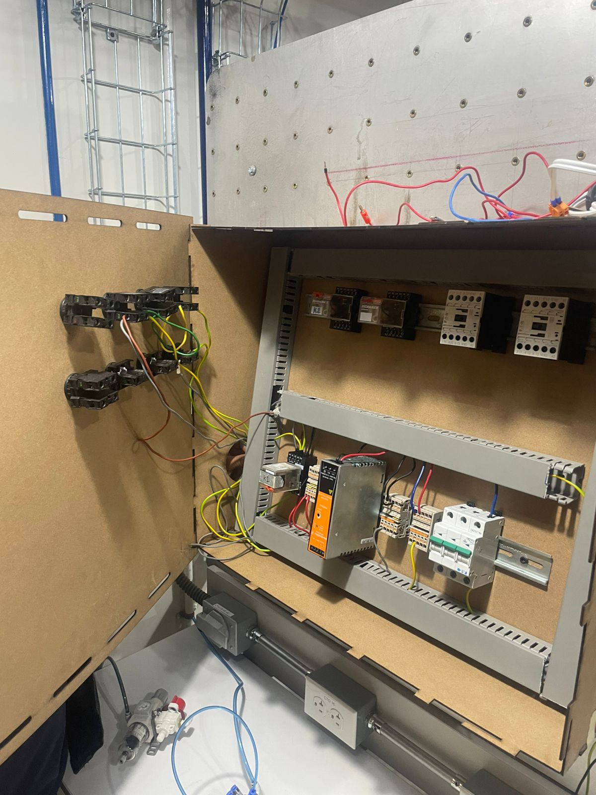

Práctica 6: Electroneumática
Objetivo
Conocer, investigar e identificar los componentes de los sistemas neumáticos.
Introducción
La electroneumática es una rama de la ingeniería que combina elementos de sistemas eléctricos y neumáticos para controlar dispositivos mediante la energía del aire comprimido y señales eléctricas. En estos sistemas, los componentes eléctricos, como solenoides, sensores y controladores, trabajan junto a elementos neumáticos, como cilindros y válvulas, para realizar tareas de movimiento y automatización en aplicaciones industriales.
Este tipo de tecnología es ampliamente utilizada en la automatización industrial porque permite movimientos precisos y rápidos, con una construcción relativamente sencilla y con menor costo de mantenimiento en comparación con otros sistemas de automatización. Además, la electroneumática es muy común en líneas de ensamblaje y en la industria manufacturera, donde es esencial realizar movimientos repetitivos y seguros, como el levantamiento, posicionamiento o empuje de piezas.
Gracias a la integración de controladores programables (PLC) y sensores electrónicos, los sistemas electroneumáticos han evolucionado para responder a condiciones de trabajo variables y realizar tareas de forma autónoma. Esto permite a las empresas aumentar su eficiencia, reducir errores y optimizar el uso de la energía.
Materiales
- Fuente de alimentacion
- Botones
- LED's
- Contactos
- Relevadores
Desarrollo
Ejercicios de simulación
Armado de manera fisica
Reportes de practica
Descargar PDF del reporte de Practica 6Conclusiones
La electroneumática representa una solución eficiente y flexible para la automatización de procesos industriales, combinando la rapidez de los sistemas neumáticos con la precisión del control eléctrico. Su capacidad de realizar tareas repetitivas de forma segura y a bajo costo la convierte en una tecnología esencial en sectores de manufactura y ensamblaje. Además, con el avance de los sistemas de control y sensores, la electroneumática continúa evolucionando, permitiendo la creación de procesos más inteligentes y autónomos que ayudan a mejorar la productividad y la eficiencia energética en las plantas industriales. La integración de la electroneumática no solo optimiza el rendimiento de los sistemas industriales, sino que también abre oportunidades para innovar en aplicaciones automatizadas, adaptándose a las necesidades cambiantes de la industria.
Volver a inicio